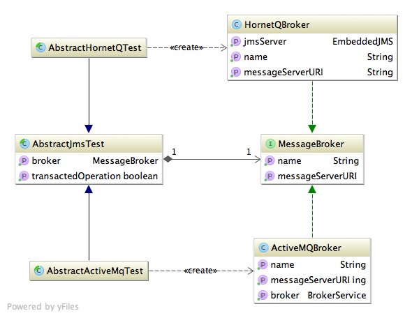

Overview: Messaging Test
The Java EE Messaging specification is simple in regards to how to create and synthesize JMS messages. However, creating and sending messages require a JEE infrastructure which is far from trivial to setup. The Nazul Core: Messaging Test project provides a simple infrastructure to setup and run JMS message tests.
The Messaging Test component provides a main abstract superclass (called AbstractJmsTest) which contains most of the mechanics required to automatically set up a message broker, permit users to add Destination definitions and then launch each testcase. As illustrated in the image below, 2 abstract subclasses to the AbstractJmsTest exist:
- The AbstractActiveMqTest is an AbstractJmsTest that wraps an in-memory Apache ActiveMQ message broker.
- The AbstractHornetQBroker is an AbstractJmsTest that wraps an in-memory JBoss HornetQ message broker.
The class structure of the messaging test project is as follows:

There is typically a standard way to setup JMS unit tests using the Messaging Test project:
- Create the services, which contain the server-side JMS objects - normally a Connection/Session/MessageProducer and MessageConsumer/MessageListener to read requests from the client and send out responses back to it. While trivial in themselves, these operations are typically rather boilerplate- heavy, as illustrated in the “Sameple setupServices() method” code snippet below.
- Create each testcase, which contain the client-side JMS objects - normally another set of Connection/Session/MessageProducer and MessageConsumer/MessageListener to create/send requests to the broker for processing in the client side. While simple, these test cases are typically also strewn with boilerplate setup code, as illustrated in the “Sample unit test method” code snippet below.
The server side: Setting up services
All messaging tests require client-side logic sending messages and receiving responses, as well as server-side logic receiving client request messages and returning responses back to the client. The setupServices method is called before each unit test method, and is intended to set up the server-side logic.
Typically, the server side logic setup follows the code snippet below:
/**
* {@inheritDoc}
*/
@Override
public void setupServices() throws JMSException {
// This is where we set up JMS objects on the server side.
// These objects are created before any test cases are launched.
// 1) Get a connection to the JMS broker.
final Connection serverSideConnection = createConnection();
// 2) Create a server-side Session, Queue and MessageConsumer reading messages from the broker.
final Session serverSideRequestSession = createSession(serverSideConnection);
final Queue serviceSideInboundQueue = serverSideRequestSession.createQueue(SERVER_SIDE_INBOUND_REQUEST);
final MessageConsumer requestMessageConsumer = serverSideRequestSession.createConsumer(serviceSideInboundQueue);
// 3) Create a server-side Session, Queue and MessageProducer sending messages to the broker.
final Session serverSideResponseSession = createSession(serverSideConnection);
final Queue serviceSideOutboundQueue = serverSideResponseSession.createQueue(SERVER_SIDE_OUTBOUND_RESPONSE);
final MessageProducer responseMessageProducer = serverSideResponseSession
.createProducer(serviceSideOutboundQueue);
responseMessageProducer.setDeliveryMode(DeliveryMode.NON_PERSISTENT);
// 4) Register a MessageListener to read messages from the requestMessageConsumer
// and write messages to the responseMessageProducer.
// This completes the server-side setup.
requestMessageConsumer.setMessageListener(new MessageListener() {
@Override
public void onMessage(final Message message) {
// Stash the received message for test purposes
serverSideReceivedMessages.add(message);
try {
// Define the outbound message
final TextMessage toReturn = serverSideResponseSession.createTextMessage();
toReturn.setJMSCorrelationID(message.getJMSMessageID());
// This test service is designed only to properly accept incoming TextMessages.
if (!(message instanceof TextMessage)) {
// Create an error message.
toReturn.setText("Only text messages are handled. Received ["
+ message.getClass().getSimpleName() + "]");
} else {
// Create a 'proper' response holding the body of the
// inbound TextMessage + some extra text.
final TextMessage msg = (TextMessage) message;
toReturn.setText("Received inbound: " + msg.getText());
}
// Send the error message back to the client.
responseMessageProducer.send(toReturn);
serverSideResponseSession.commit();
} catch (JMSException e) {
throw new IllegalStateException("Could not send message.", e);
}
}
});
}
The client side: unit test method definitions
All messaging tests require client-side logic sending messages and receiving responses, as well as server-side logic receiving client request messages and returning responses back to the client. The setupServices method is called before each unit test method, and is intended to set up the server-side logic.
Typically, the client side logic setup follows the code snippet below:
@Test
public void validateTextMessageYieldsCorrectResponse() throws Exception {
// Assemble
final String clientMessage = "This is a client-side originated message.";
final List<Message> receivedClientResponses = new ArrayList<Message>();
final Connection clientConnection = createConnection();
final Session clientRequestSession = createSession(clientConnection);
final Queue clientRequestQueue = clientRequestSession.createQueue(CLIENT_SIDE_OUTBOUND_REQUEST);
final Session clientResponseSession = createSession(clientConnection);
final Queue clientResponseQueue = clientResponseSession.createQueue(CLIENT_SIDE_INBOUND_RESPONSE);
final MessageProducer clientRequestProducer = clientRequestSession.createProducer(clientRequestQueue);
clientRequestProducer.setDeliveryMode(DeliveryMode.NON_PERSISTENT);
final CountDownLatch receivedMessagesLatch = new CountDownLatch(1);
final MessageConsumer clientResponseConsumer = clientResponseSession.createConsumer(clientResponseQueue);
final MessageListener clientResponseListener = new MessageListener() {
@Override
public void onMessage(final Message message) {
receivedClientResponses.add(message);
receivedMessagesLatch.countDown();
}
};
clientResponseConsumer.setMessageListener(clientResponseListener);
// Act
final TextMessage toSend = clientRequestSession.createTextMessage();
toSend.setStringProperty("foo", "bar");
toSend.setText(clientMessage);
clientRequestProducer.send(toSend);
clientRequestSession.commit();
final boolean correctlyReceivedMessage = receivedMessagesLatch.await(2, TimeUnit.SECONDS);
// Assert
Assert.assertTrue(correctlyReceivedMessage);
Assert.assertEquals(1, receivedClientResponses.size());
Assert.assertEquals(1, serverSideReceivedMessages.size());
final TextMessage response = (TextMessage) receivedClientResponses.get(0);
Assert.assertEquals(response.getText(), "Received inbound: " + clientMessage);
}